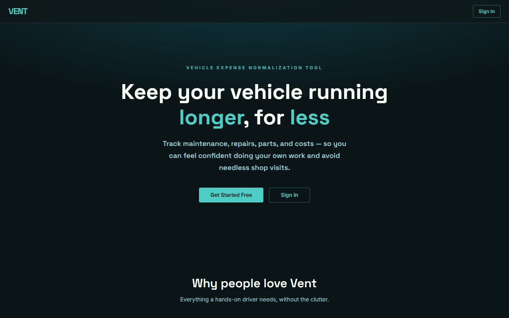

Vent.
Vehicle Expense Normalization Tool. A garage for people who track every part, mod and dollar: service history, fill-ups, registration, loans — and the cost-of-ownership analytics that turn the spreadsheet into an answer.

The spreadsheet, replaced.
It started as tabs in a spreadsheet — Overview, Expense, Loan, Engine Rebuild — for one car. The DIY enthusiast wants the full financial and mechanical story; the newcomer wants to know what the work is actually saving them. Vent is the tool that holds that story properly.
[WHICH CAR STARTED IT — and the number that made you want the spreadsheet gone.]
Built like a product, on purpose.
Vent is run with personas, themes, epics and a phased roadmap in the repo. Phase 1 restructured the codebase into a Turborepo monorepo — a Next.js web app, an Expo scaffold for iOS, and a shared @vent/core data layer — and redesigned the IA: left sidebar, a Forza-style garage grid you can drag to reorder, a vehicle dashboard with a stat strip and a service timeline.
Phase 2 shipped the core: a two-step VIN onboarding flow with NHTSA lookup, service events with line items and photos, per-vehicle analytics. Phase 3 added gas fill-ups, registration, loan tracking (cash vs. financed, APR, term, payment schedules) and a unified vehicle history, then a dedicated analytics page — total cost of ownership, $/month and $/mile per category, with drilldowns. Phase 4 is the community layer: a public build page per vehicle, an Explore feed, comments, a forum with full-text search, notifications; a marketplace and garage-level analytics are next. Phase 5 is the native iOS app on the same core.
Under it: Supabase for Postgres and auth with row-level security everywhere, public reads through security-definer RPCs, a DynamicForm that turns a Zod schema and a list of sections into a react-hook-form UI, MUI for the components, Recharts for the analytics.
Lessons.
- A phased roadmap with an explicit UX gate kept the community features from landing on an inconsistent product.
- Sharing a data layer between web and mobile is cheap to set up early and expensive to retrofit.
- [SOMETHING YOU’D DO DIFFERENTLY]
Try it.
Free to start. Add a vehicle by VIN and the garage fills itself in.